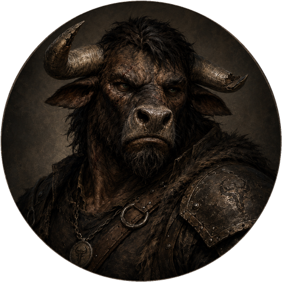
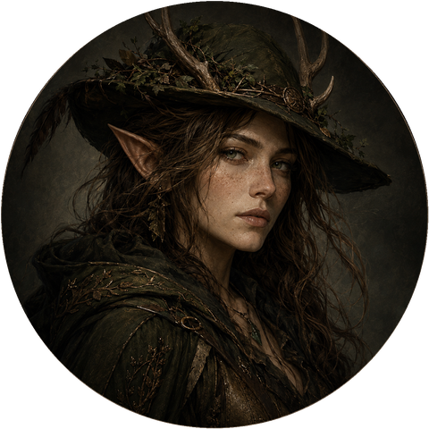
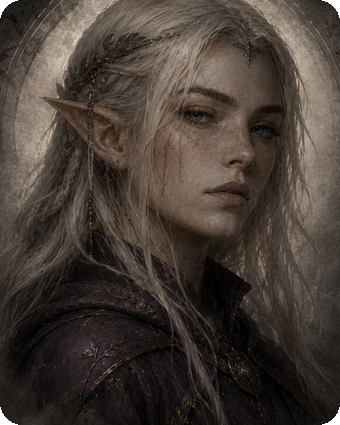
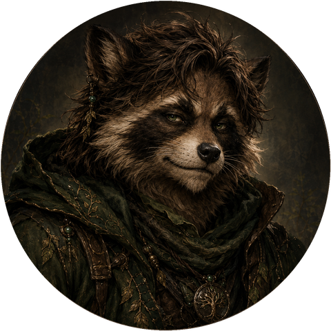
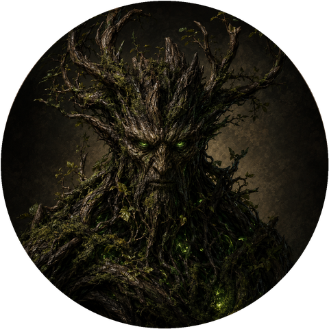

The Party
Six strangers who boarded a train together. They fight under a borrowed name now.
Main Party
Chango K Caza
A Venaran bounty hunter who boarded the Desert Rose with his prisoner, the archaeologist Nathan Indiana Croft, in tow. He's since loosened Nathan's bindings in exchange for what he knew about stopping the Setantii — whether he means to let the man go entirely, he still hasn't said. He still carries an unmarked pocket watch engraved "T.R.", found on that same train, that no one has been able to place.
Off the clock, he wants the indentured Venaran blacksmith freed, and a way of his own up into the Cobbles. Keeps to himself more than most — cleaning his pistols, trading quiet words with Nathan — but the Colosseum attack rattled him enough to admit, afterward, that he needed a break.
In Session 12, a man matching the Professor's description walked past the rest of the party without a glance and greeted Chango by name, like they already knew each other. In Session 13, he accepted the Professor's offer before anyone else could: deputation badges for the whole party, in exchange for clearing a vault belonging to Marhesh Dar, the Mad Jester King — the rest of the party hasn't agreed yet. Only after accepting did he learn why the Professor knew him at all: he claims to have given Chango sentience, long ago, purely for his own entertainment. Chango still doesn't remember him — only fragments that surfaced on their own, and a word he couldn't stop screaming.
Coren Vael
One blue eye, one green — a mark of his birth lineage — and once a member of the Silent Knives. He fled Abrams Rest after a botched solo job, stabbing his partner Jareth mid-spell in their safehouse before running for reasons he still hasn't fully explained.
Ressa told him what he came back to: the Knives wiped out in his absence, herself spared and put to work as a foreman. A journal on Subject 442 finally answered what happened to Jareth's body — and revealed that Coren's mother is the hag Callow May, a secret he's at last shared with the party. Born in Dreadmere Marsh; these days, home is nowhere in particular.
In Session 13, he finally told the whole truth: a changeling sent away by a terrified human father, and the blade in Jareth's neck was meant to sever Callow May's grip on him, not end his life. Full story in the Session 13 log.

Hylanku Lonehorn
His left horn was shattered by the same bullet that killed Old Bull, the minotaur who found him feral and broken at the Coccium Ruins and raised him after. He still speaks in blunt, almost neanderthal common, and carries real guilt over failing to protect the party during the bat attack at the Colosseum — guilt heavy enough that a prayer to Jarák afterward answered with the blessed one devotion, and a deeper well of healing magic to draw on.
In Session 10, he finally told the party the whole story: Old Bull died shielding Foxfire, a red-haired mage who'd kept their caravan fed, from the Baron's men — and the silver-haired enforcer who killed him and broke Hylanku's horn was confirmed, that same session, as Lorcend Von Basten. Hylanku was dragged into the mines before he learned whether Foxfire got away, and hasn't stopped looking for her since.
Beneath the Professor's library, he recognised Old Bull's bones built into a guardian construct, and in Session 13 learned the Professor had used them for "another experiment" since — he answered by hurling a slab of stone at the Professor, which shattered on impact without leaving a mark. He also learned that the amulet found below, the Horns of Bos, once belonged to the First Horn of the old Minotaur Empire, and that Old Bull's own axe is still out there somewhere — just not with the Professor.
He prays with a token given to him by Old Bull, wears a half plate Yangu gave him, and keeps a broken manacle chain around his wrists as a reminder even after asking to have it cut.

Lira Cervan
Came to Abrams Rest looking for her elk, Thallion, and enlisted the party to help win him back in a Colosseum fight — successfully. She keeps him tucked inside her hat when he's not needed; antlers appear on the brim the moment he vanishes into it.
Spent a day helping wrap the bat attack's dead for the city's funeral rites, and used the grief in the room to plant a little distrust of the guards who'd let it happen. Tries reading the future by dust and jar more often than it actually works. Home is the Dead Woods, whenever she makes it back.
Beneath the Professor's library, it was her hand that found the hidden catch behind a false book spine, opening the passage down — and her senses that first caught something "twisted," not cursed, waiting further in. In the tank chamber that followed, a diseased festrog dropped her twice; Quercucoonie's healing and Verdant Shade's cutting winds were what got her back up both times.
In Session 13, she confirmed the Professor standing in front of them was real, not an illusion — and found the sheer amount of magic layered onto him almost too much to take in at once. She warned the others he might still be listening even after they'd left, and was the one who set the party's course once they were alone: rest, gather materials, then plan.

Luxem
Never said why she was travelling to Abrams Rest, and wasn't glad to find another elf already in the party. She unwittingly triggered the Setantii at the goblin camp and was knocked cold — and never fully woke from it, a mystery even the Plague Doctor couldn't explain despite everything looking physically fine.
Died in her sleep during the Cobbles work; Hylanku learned of it in Session 9. Wrapped for the city's funeral rites and sent into the Drop with one of Quercucoonie's seeds, so she'd have something to grow wherever she ended up.

Quercucoonie
On a mission to reforest his dying homeland, and to understand why it's dying in the first place. He's asked Ressa about survey work involving the mind, and prays to a deity named Orth. On impulse, bought a man being sold at auction as "Item 297," meant to free him outright, and ended up with Kuldosk joining the party instead — until Session 13, when Kuldosk, having seen enough for one lifetime and his debt long since repaid, left the party for good.
In Session 13, Ort gave him a small book bound in the symbol of Orf — a different god to his own — on the way out of the Professor's laboratory. Told as a limerick, it explained how Orf once helped the Tenuki protect the Lang Tree from the Great Devastation with a spell bound to an artefact. That protection is failing now — the book didn't say how to fix it, but it finally explained why his homeland stopped regenerating in the first place.
His summoned eidolon, Verdant Shade — a tree-like creature that shares his health pool — rarely strays far, and reforms from roots when it's dismissed by force. Home is the Hodenbaumhaut Forest.
Thallion
The elk Lira came to Abrams Rest looking for. Found captive beneath the Colosseum, marked for delivery to Professor Godt — the party won him back by fighting under the name Abrams Unrest, and he ran straight to her the moment he was released.
Lira can tuck him away with a spell called Pet Cache; he leaps into her hat and vanishes, leaving antlers on the brim until he's called back out. He's carried wounded party members to safety more than once, including through the bat attack's retreat from the Colosseum.

Verdant Shade
A tree-like creature summoned by Quercucoonie, and the first thing the party ever saw him do — obliterating a goblin with a single punch aboard the Desert Rose in Session 1. Shares his health pool, and vanishes if he's knocked unconscious, only to reform later from a twisting mass of roots.
Tore an aquamarine eye from a defeated homunculus in the Riad, and threw Quercucoonie bodily up through the library window in Session 10 while he was in smaller animal form. Rarely strays far from him.
Temporarily Joined the Party
Phil Philliamson
Joined the party the moment they arrived — a benefactor paid him to watch them, though he's never said who. Nicknamed "Crosswind Phil," he hinted there are ways into the Cobbles that don't need a pass.
An old injury left him scarred and imbued with magic that once saved his life; the scar still flashes blue and whispers at the mention of magic. He wants the Baron gone, fought hard in the Colosseum, and was last seen fleeing the opposite gate once the bats came down.
Karl
Never seen in Abrams Rest, and yet nothing happens there without him. Every quota, every closed gate, every bat that falls out of a clear sky answers to him first. He built the Blighted West grain by grain, gave the Baron his cruelty and the Professor his curiosity, and has never once let the party see the whole map.
Roll well, and he might let you keep something you love. Roll badly, and — by the look on his face — he already knew you would.